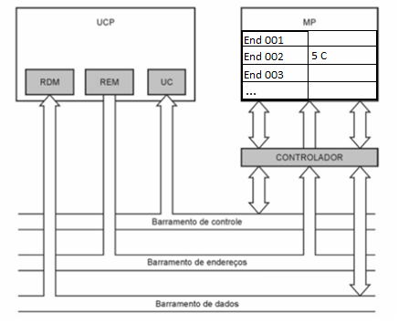
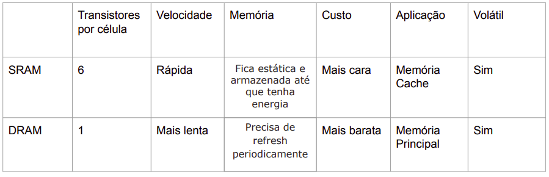

Memória RAM
Memória Principal / Random Access Memory
Memória RAM
- Armazenamento Volátil
- Feita de semi-condutores
- Mais performática que o HD
- Carrega os arquivos do HD ou da rede
- Parte Ativa do OS, softwares e dados
Memória Cache
- SRAM
- Mais performática que a memória principal
- Copia dados e instruções da memória RAM
Comunicação MP - Processador
- Leitura / Escrita

SRAM
Static Random Access Memory
Memória RAM Estática
SRAM
- Célula: Circuitos com 6 transistores (flip-flops)
- Dados armazenados
- Maior, mais cara e com menos capacidade de armazenamento
- Memória Cache
DRAM
Dynamic Random Access Memory
Memória RAM Dinâmica
DRAM
- Célula: um transistor e um capacitor
- Precisa receber “Refresh”
- Menor, mais barata e com maior capacidade de armazenamento
- Memória Principal
DRAM VS SRAM
FPM DRAM
Fast Page Mode
Modo de Operação Rapida
Memória FPM
- Controlador de memória faz até 4 acessos em sequência à DRAM
- Usabilidade
EDO DRAM
Extend Data Output
Saída Extendida de Dados
Memória EDO
- Trabalho em pares
- Acesso simultâneo a novas posições de memória enquanto os dados estão sendo lidos na saída
BEDO DRAM
Burst EDO
Memória BEDO
- Circuito de memória raro
- Possui registrador e gerador interno de endereços sequenciais
SDRAM
Synchronous DRAM
SDRAM
- Trabalha na frequencia do sistema
- Alta performace
- Acesso a memória coordenado pelo clock do sistema
DDR SDRAM
Double Data Rate SDRAM
Transfere dados na subida e descida do clock

DR RRAM
Direct Rambus DRAM
DR DRAM
- Padrão proprietário da Rambus Inc.
- Transferência de dados na subida e descida do clock
- Usa o Direct Rambus Channel (barramento estreito permite estas taxas altas)
- Barramento de 16 Bits


Referência:
-
Arquitetura de Computadores – PCs
Livro por RENATO RODRIGUES PAIXAO
-
Sistemas de Computação. [s.l: s.n.]. Link
-
Diferença entre SRAM e DRAM. Link
-
Como funcionam as Memórias RAM? DRAM e SRAM | Cybee Info #02
Tecnologia em Análise e Desevolvimento de Sistemas
Introdução a Informática - UTFPR - PB - 2022
Jorge Dorio
Fernando Loff
Renan Matos
Gabriel Conte